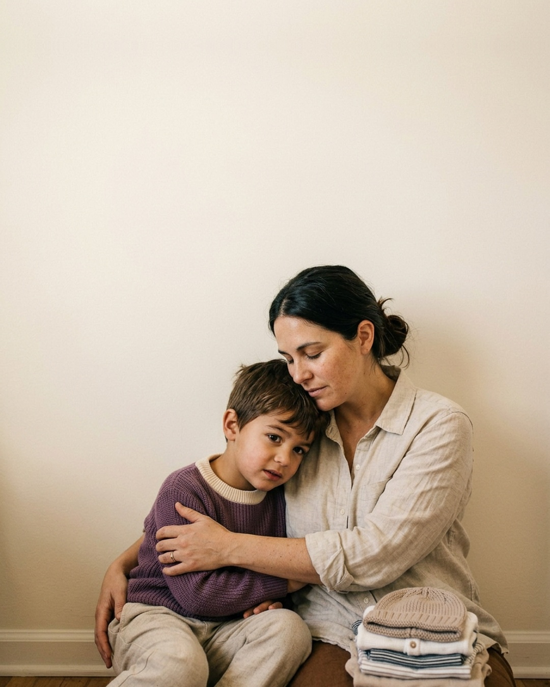
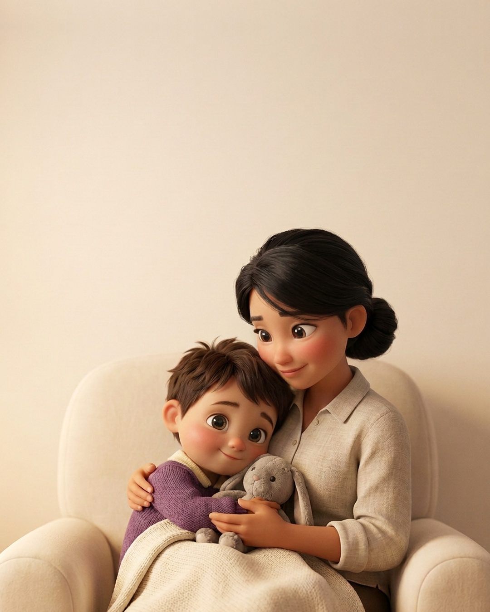
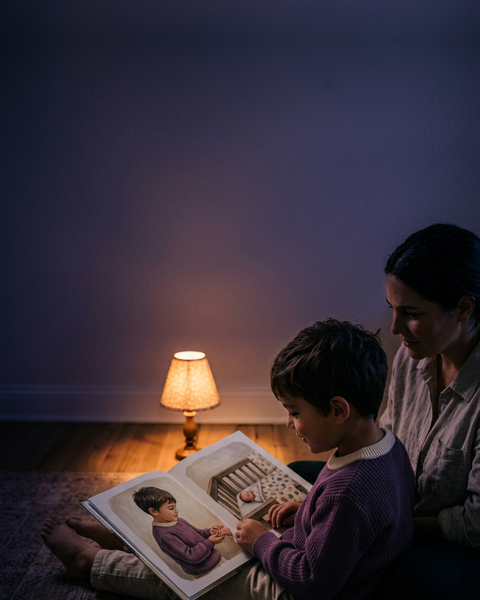

LumeBook1/7
עוד מעט נולד תינוק.
וגם הילד הגדול שלכם
עומד להיוולד מחדש.
נוצר בעזרת AIהחליקו

LumeBook2/7
לפני שמבקשים ממנו
לשמוח, תנו מקום
לכל מה שהוא מרגיש.
LumeBook3/7
״מותר לך לאהוב אותו
וגם להתגעגע
למה שהיה.״
LumeBook4/7
״יש דברים שיישארו
רק שלנו.״

אתה לא צריך להיות
גדול כל הזמן

LumeBook6/7
כשהוא פוגש את הרגע
בסיפור, הוא יכול
להתאמן עליו
לפני שהוא מגיע.
LumeBook7/7
בסיפור הזה הוא לא מאבד
את המקום שלו.
הוא מגלה תפקיד חדש.
צרו תצוגה מקדימה בחינםלספר ״אח חדש״ · הקישור בביו
התמונות נוצרו בעזרת AI@lumebookai